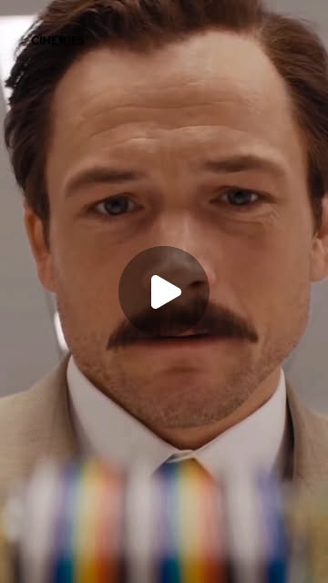

Instagram Reel

Movie:🎬 Tetris (2023)
video transcript (enriched by ClaudeClaw)
Summary
[CAPTION]
Movie:🎬 Tetris (2023)
In the scene where Henk Rogers (played by Taron Egerton) first sees the Nintendo console, it’s not just a man seeing a gadget — it’s a visionary meeting the future. His reaction is quiet, almost reverent.
[CAPTION]
Movie:🎬 Tetris (2023)
In the scene where Henk Rogers (played by Taron Egerton) first sees the Nintendo console, it’s not just a man seeing a gadget — it’s a visionary meeting the future.
His reaction is quiet, almost reverent. At first, there’s curiosity in his eyes — then a spark of realization, a sense that he’s witnessing something that will change everything.
No dramatic moves, just pure truth — discovery shown through subtle expression.
Story in a Nutshell
The film Tetris (2023) follows Henk Rogers, a video game designer and entrepreneur, who discovers the game Tetris in 1988 and fights to secure its global rights amid Cold War politics and corporate chaos.
It’s a thrilling mix of innovation, risk, and belief — how one man’s vision helped bring a Soviet-born game to the entire world.
Tetris (1984) held the title of best-selling video game of all time from 1993 until 2020, when it was surpassed by Minecraft — but its impact still shapes gaming history.
#ActingAlchemyLab #TetrisMovie #TaronEgerton #HenkRogers #ActingDiscovery #SubtleActing #FilmStudy #CharacterJourney #ActingMoment #EmotionalTruth #OnScreenMagic #CinemaAlchemy #ActorTraining #BehindTheExpression #ActingCraft #TrueStoryFilm #1980sEra #NintendoScene #ColdWarDrama #GameChanger
[VIDEO]
An NDA? Why? Because only ten other people in the world have seen what you're about to see, and to be honest. We don't trust you. Eight-bit graphics? Yes. And a brand new sharp LR35902 core at 4.19 megahertz with eight kilobytes internal RAM. Impressive. No color screen? Color, you need eight batteries instead of four. It's too expensive. This gives you 30 hours of gameplay. All for eighty-nine dollars. What's it called? It's called the Game Boy. Go ahead, try it. And we want publishers like you to be on the lookout for new games. So you'll package it with Mario? Yes. It's our best brand.
View original on Instagram Reel →